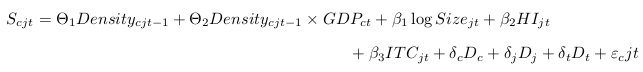
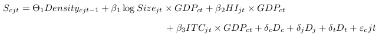
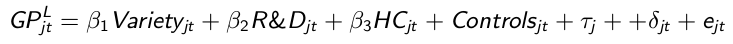

Green Innovation
an empirical analysis of technology, skills and policy
François Perruchas
PhD tutors: Davide Consoli, Nicolò Barbieri

Introduction
Paris Agreement: hold the increase in global average temp. below 2ºC
⤷ achieving net zero emissions of greenhouse gases by the second half of this century
- Need of a radical change in technologies
- How are green technologies evolving? Are they mature?
- Who produce them? which knowledge, skills are they associated with?
Research questions
- What are the green technologies?
- Where are they produced?
- Which are the countries' characteristics associated with the diversification/specialisation in green technologies?
- Are all the GT in the same development stage?
- What type of skills / knowledge is associated with GT production?
Building a dataset on Green Technologies
- Using patent data - PATSTAT 2016a
- Identification with ENV-TECH (OECD, 2016)
- 8 families: Environmental Management, Climate Change Adaptation & Mitigation
- 36 technologies at 2 digit level
- 94 technologies at 3 digit level
- Geolocalisation of inventors at city level
Evolution of Green Technologies [1970 - 2012]
Number of Patent families in green tech [1970 - 2012]
Overview of Green Technologies
- Which countries are leaders / laggards / catching-up in the production of GT ?
- Differences between green technologies
- using Economic Fitness-Complexity (EFC) approach
green fitness ranking of 36 technologies
green fitness ranking of 61 active countries
Relation between green fitness - GDP - export fitness
Countries diversification and specialisation in GT
- Countries' portfolios of GT is very heteregoneous
- Developed countries are main producer, but not only
- Some developed countries only produce a few GT
- Which are the countries' characteristics to be involved in GT production?
Research design
We estimate the probability of
⇢ diversification in a GT

⇢ specialization in a GT

with:
- Scjt: 1 if RTA > 1
- ITC: complexity of a technology (Hidalgo, 2007)
- Density: how close is a tech. to country's GT portfolio
- HI: Herfindhal Index
- Size: size of the technology
Regression results
| Div. Eq. (1) | Div. Eq. (2) | Spec. Eq. | |
|---|---|---|---|
| Density | 0.027*** | 0.116*** | 0.141*** |
| (0.01) | (0.01) | (0.01) | |
| Density * GDP | 0.000* | 0.000 | |
| (0.00) | (0.00) | ||
| Tech-Level Variables | |||
| Log Size | 0.005* | 0.007** | 0.010*** |
| (0.00) | (0.00) | (0.00) | |
| Herfindahl Index | -0.019** | -0.050*** | 0.010 |
| (0.01) | (0.01) | (0.01) | |
| ITC | 0.002** | 0.004*** | 0.002** |
| (0.00) | (0.00) | (0.00) | |
| GDP x Log Size | -0.000 | ||
| (0.00) | |||
| GDP x Herfindahl Index | -0.000*** | ||
| (0.00) | |||
| GDP x ITC | 0.000*** | ||
| (0.00) | |||
| Tech Fixed Effects | Yes | Yes | Yes |
| Time Fixed Effects | Yes | Yes | Yes |
| Country Fixed Effects | Yes | Yes | Yes |
| Obs. | 51149 | 70547 | 77065 |
| (1) RTA < 0.1 in the prev. period. (2) RTA < at the beg. of the sample. | |||
Countries characteristics
Diversification probabilities
Countries characteristics
Specialization probabilities
Characterization of a technology life cycle
4 stages defined by Vona & Consoli (2015):
- Emergence: exploration, experimentation, competition between different designs, highly localised
- Development: standardisation of design, shake out of inferior variants, some diffusion
- Diffusion: stabilisation of design, wider geographical diffusion
- Maturity: dominant design, high standardisation, widest geographical diffusion
Characterization of a technology life cycle
Identification of TLC stages: proposed approach
- Ubiquity of GT -> Country specialisation / Tech. diffusion
- Patenting intensity -> Efforts in developing GT
| Ubiquity | |||
|---|---|---|---|
| Patenting activity | low | high | |
| high | Development | Diffusion | |
| low | Emergence | Maturity | |
Characterization of a technology life cycle
Ubiquity
RTA for each GT(j) / country (c) / time(t) period
The indicator for each GT is given by the number of countries that exhibit RTA in a particular GT (Petralia et al., 2017; Balland &Rigby, 2017):
UBIQUITYj,t = Σc Mc,j with Mc,j = 1 if RTA > 1
Patenting intensity
- Number of patent families per GT
Example of some green technologies - evolution
Example of some green technologies - TLC stages
Knowledge and skills associated with GT
- GT require different competences that are far form traditional knowledge bases of industries (De Marchi, 2012; Ghisetti et al. 2015)
- GT are more complex, radical, pervasive and impactful than non-GT (Barbieri et al. 2018)
- Which knowledge structures are associated with GT growth?
- Is this association stable over the green technology life cycle?
Knowledge structures: Related - Unrelated variety
- Innovation: accumulation and recombination
- Location matters: innovation needs interaction, proximity and diversity of competences
- two kinds of diversity:
- within-industry: Related Variety (RV)
- between-industry: Unrelated Variety (UV)
- complementary of UV & RV (Castaldi, 2015):
- UV more associated with Radical Innovation
- RV more assoc. with Incremental Innovation
Measuring variety with Entropy
We measure variety with the territory knowledge base using patent families and IPC codes (Castaldi, 2015).
UV ⇒ recombination of IPC 1 digit (ex: C)
SRV ⇒ recombination of IPC 4 digits (ex: C01B)
RV ⇒ recombination of IPC 8 digits (ex: C01B 6/10)
Evidences from US federal states
Our conjecture:
- green technologies ≠ other technologies
- tech. in early stage ⇒ UV, maturity stage ⇒ RV
Empirical model:

Where:
- GP: N. of green patent families per millions inhabitants in US states over year
- Variety: UV, SRV and RV
- R&D: R&D expenditure
- HC: % of people with bachelor degree or higher
- Controls (HC and R& in neighbour states, Pop. density)
- Τj: state fixed effects
- δjt: time fixed effects
Preliminary results
| GP (log) | Tot Pat (log) | |
|---|---|---|
| UV (log) | 1.386*** | -0.931* |
| (0.421) | (0.507) | |
| SRV (log) | 0.286 | 0.193*** |
| (0.184) | (0.0668) | |
| RV (log) | 0.392** | 0.515*** |
| (0.154) | (0.0987) | |
| Controls | YES | YES |
| State FE | YES | YES |
| Time Dummies | YES | YES |
| Random growth | YES | YES |
| Obs. | 1466 | 1470 |
Preliminary results
| GP (log) | Emergence | Development | Diffusion | Maturity | |
|---|---|---|---|---|---|
| UV (log) | 1.386*** | 0.958* | 1.214** | 0.597 | 0.716 |
| (0.421) | (0.523) | (0.590) | (0.786) | (0.473) | |
| SRV (log) | 0.286 | -0.356 | 0.783*** | 0.166 | -0.205 |
| (0.184) | (0.338) | (0.201) | (0.249) | (0.147) | |
| RV (log) | 0.392** | 0.421 | 0.516*** | 0.434* | 0.554*** |
| (0.154) | (0.313) | (0.157) | (0.247) | (0.0848) | |
| Controls | YES | YES | YES | YES | YES |
| State FE | YES | YES | YES | YES | YES |
| Time Dummies | YES | YES | YES | YES | YES |
| Random growth | YES | YES | YES | YES | YES |
| Obs. | 1466 | 1392 | 1371 | 1424 | 1452 |
Conclusions
- Prominent part of asian countries in GT production
- GDP is not a barrier to step into the ring
- Green Technologies are more associated with UV than other technologies
- Emerging GT are associated with UV, mature GT with RV
Therefore
- Specialisation trap: timing of investing in GT in the life cycle
- Opportunity to develop green technologies according to local production structure
- "Recombination" skills will be needed to develop GT